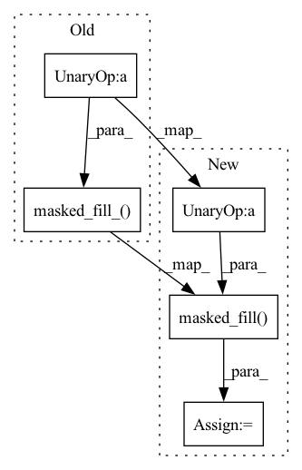

Pattern ID :25921
Before Change
if exists(mask):
mask = rearrange(mask, "b n -> b () n ()")
k.masked_fill_( ~mask, -torch.finfo(k.dtype).max )
q = q.softmax(dim = -1)
k = k.softmax(dim = -2)
After Change
if exists(mask):
mask = rearrange(mask, "b n -> b () n ()")
k = k.masked_fill( ~mask, -torch.finfo(k.dtype).max )
q = q.softmax(dim = -1)
k = k.softmax(dim = -2)
In pattern: SUPERPATTERN
Frequency: 3
Non-data size: 5
Instances Fragment ID: 78319487
Project Name: lucidrains/protein-bert-pytorch
Commit Name: 9440e114b898abcfc4bfc28f78465d7fc062ff22
Time: 2021-06-10
Author: lucidrains@gmail.com
File Name: protein_bert_pytorch/protein_bert_pytorch.py
M Class Name: GlobalLinearSelfAttention
N Class Name: GlobalLinearSelfAttention
M Method Name: forward(3)
N Method Name: forward(3)
M Parent Class: nn.Module
N Parent Class: nn.Module
M File Name: protein_bert_pytorch/protein_bert_pytorch.py
N File Name: protein_bert_pytorch/protein_bert_pytorch.py
M Start Line: 48
M End Line: 56
N Start Line: 49
N End Line: 57
Before Change
if exists(mask):
conv_input_mask = rearrange(mask, "b n -> b () n")
conv_input.masked_fill_(~conv_input_mask , 0.)
narrow_out = self.narrow_conv(conv_input)
narrow_out = rearrange(narrow_out, "b d n -> b n d")
wide_out = self.wide_conv(conv_input)After Change
if exists(mask):
conv_input_mask = rearrange(mask, "b n -> b () n")
conv_input = conv_input.masked_fill(~conv_input_mask , 0.)
narrow_out = self.narrow_conv(conv_input)
narrow_out = rearrange(narrow_out, "b d n -> b n d")
wide_out = self.wide_conv(conv_input) Fragment ID: 78319491
Project Name: lucidrains/protein-bert-pytorch
Commit Name: 9440e114b898abcfc4bfc28f78465d7fc062ff22
Time: 2021-06-10
Author: lucidrains@gmail.com
File Name: protein_bert_pytorch/protein_bert_pytorch.py
M Class Name: Layer
N Class Name: Layer
M Method Name: forward(4)
N Method Name: forward(4)
M Parent Class: nn.Module
N Parent Class: nn.Module
M File Name: protein_bert_pytorch/protein_bert_pytorch.py
N File Name: protein_bert_pytorch/protein_bert_pytorch.py
M Start Line: 215
M End Line: 215
N Start Line: 216
N End Line: 216
Before Change
This is called by Multi-head attention object to find the values.
scores = torch.matmul(q, k.transpose(-2, -1)) / d_k ** 0.5 // bs, head, q_len, k_len
scores.masked_fill_( mask == 0, -np.inf )
scores = (scores - scores.max()).softmax(dim=-1)
output = torch.matmul(scores, v) // bs, head, q_len, d_k
return output
After Change
scores = torch.matmul(q, k.transpose(-2, -1)) / d_k ** 0.5 // bs, head, q_len, k_len
if mask is not None:
scores = scores.masked_fill( mask == 0, -np.inf )
scores = (scores - scores.max()).softmax(dim=-1)
scores = scores.masked_fill(torch.isnan(scores), 0)
output = torch.matmul(scores, v) // bs, head, q_len, d_k
return output
Fragment ID: 78319495
Project Name: thuwangcy/rechorus
Commit Name: 3499e224537d509ed981d53c7978c5c5452b5014
Time: 2020-11-16
Author: THUwangcy@gmail.com
File Name: src/utils/layers.py
M Class Name: MultiHeadAttention
N Class Name: MultiHeadAttention
M Method Name: scaled_dot_product_attention(5)
N Method Name: scaled_dot_product_attention(5)
M Parent Class: nn.Module
N Parent Class: nn.Module
M File Name: src/utils/layers.py
N File Name: src/utils/layers.py
M Start Line: 53
M End Line: 53
N Start Line: 53
N End Line: 56